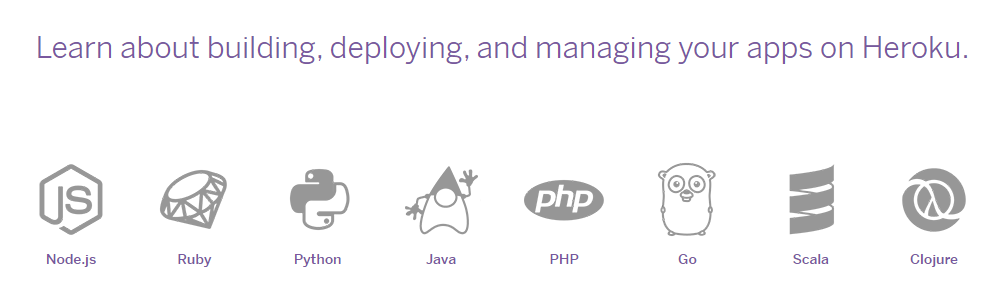
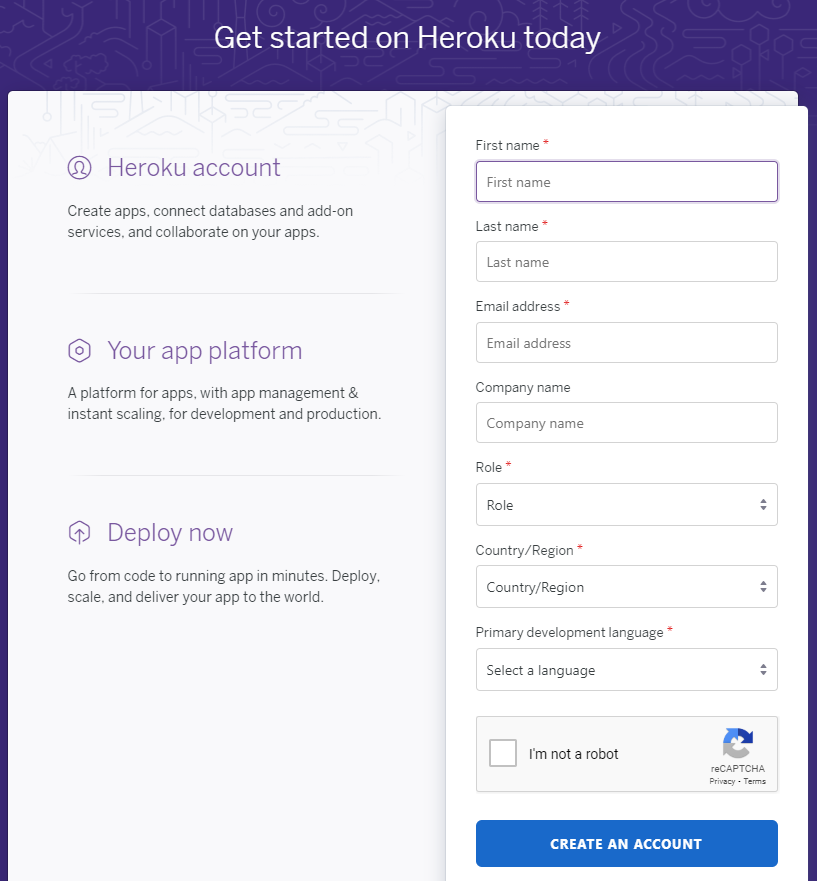
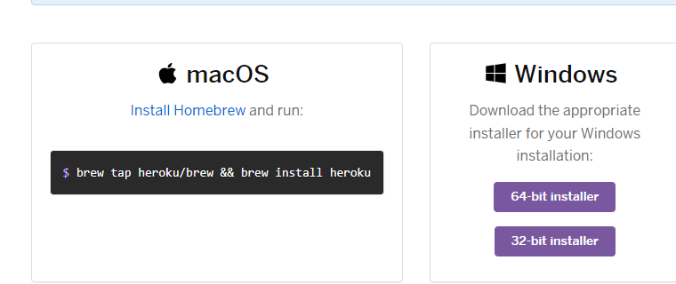
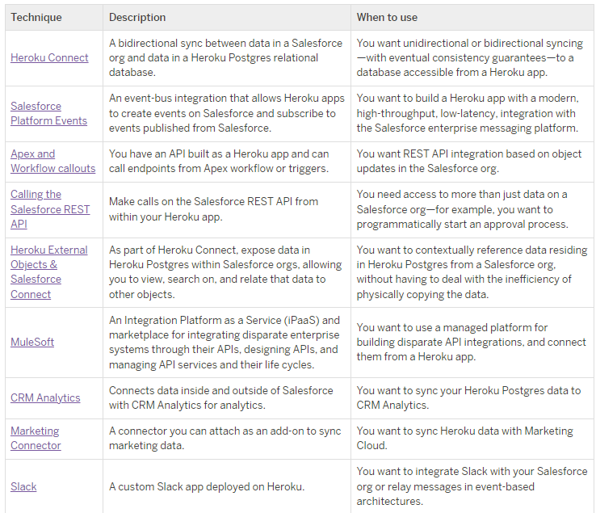

What is Heroku?
Created by
Vladimir Gedeiko

Today we will discuss about
- What is Heroku?
- What is the Heroku platform used for?
- How to use a platform?
- How Heroku work with Salesforce?
What is Heroku?
What is Heroku?
Heroku
Heroku — облачная платформа как услуга (PaaS - это означает, что платформа работает как сервис, предоставляет пользователю определенные функции и возможности, доступ к системам и ПО. При этом ее инфраструктура полностью скрыта), основанная на управляемой контейнерной системе, с интегрированными службами передачи данных и развитой экосистемой для развертывания и запуска приложений. ( Контейнеризация).
 Платформа предлагает поддержку широкого спектра языков программирования, таких как Node.js, Ruby, Python, Java, PHP, Go, Scala и Clojure. Heroku запускает приложения через виртуальные контейнеры, больше известные как Dynos.
Heroku
Обычно приложения работают на выделенном сервере, а для сайтов используют хостинги. Но возможности хостингов ограничены, а серверы, нужно настраивать, определять архитектуру, собирать приложение, заботиться о безопасности. Тратить на это ресурсы не всегда возможно.
В таких случаях используется Heroku. Платформа позволяет загружать любое приложение и не заниматься настройкой серверной части.
What is the Heroku platform used for?
1. Для размещения приложений и веб-сервисов
2. Упрощения и ускорения цикла разработки
3. Снижения потребности в работе сервером
4. Быстрого масштабирования проектов
What is the Heroku platform used for?
What is the Heroku platform used for?
How to use a platform Heroku?
How to use a platform Heroku?
How to use a platform Heroku?
- Открыть приложение в командной строке, написать команду heroku login -i, а затем ввести данные от своего аккаунта.
- Скачать официальную консольную утилиту The Heroku Command Line Interface (CLI, также известна как Herokuapp) на сайте сервиса. Для ее работы необходим установленный Git.
- Зарегистрироваться на официальном сайте heroku, add MFA и выбрать тариф(Add a payment method).
- Перейти в папку, где хранится приложение, и ввести команду heroku create.
- Зарегистрироваться на официальном сайте heroku, add MFA и выбрать тариф(Add a payment method). 
- Скачать официальную консольную утилиту The Heroku Command Line Interface (CLI, также известна как Herokuapp) на сайте сервиса. Для ее работы необходим установленный Git.

- Открыть приложение в командной строке, написать команду heroku login -i, а затем ввести данные от своего аккаунта.
heroku login -i - Перейти в папку, где хранится приложение, и ввести команду heroku create. Deploying with Git
heroku create
How Heroku work with Salesforce?
How Heroku work with Salesforce?
How Heroku work with Salesforce?
You can integrate Heroku and the Salesforce Platform in several ways, and choosing among them comes down to understanding your requirements and the capabilities of each integration type.
How Heroku work with Salesforce?
Heroku Connect
Heroku Connect обеспечивает интеграцию данных. Он синхронизирует только объект и таблицы данных. Вы можете решить, какие объекты синхронизируются.
Use case: Эта архитектура полезна во многих сценариях, когда вы хотите, чтобы приложение Heroku сохраняло или манипулировала данными Salesforce.
Publish and Subscribe to Salesforce Platform Events
Use case: Можно использовать когда нужна интеграция между SF и приложение на Heroku
Возможность publish and subscribe to Platform Events. Для этого может быть использованна библиотка jsforce for Node.js
Publishing Example:
// Establish an authenticated Salesforce connection.
const conn = new jsforce.Connection({ … });
const eventData = {
Flight_Id__c: id,
Confirmation_Number__c: confirmationNumber
};
conn.sobject('Flight_Approved__e').create(eventData, (err, res) => {
if (err) {
console.error(err);
} else {
console.log("Event published");
}
});
Subscribing Example:
// Establish an authenticated Salesforce connection.
const conn = new jsforce.Connection({ … });
const channel = "/event/Flight_Approved__e";
const replayId = -2; // -2 is all retained events
const replayExt = new jsforce.StreamingExtension.Replay(channel, replayId);
const fayeClient = conn.streaming.createClient([ replayExt ]);
const subscription = fayeClient.subscribe(channel, data => {
console.log('Received Flight Approved Event', data);
});
Make Apex and Workflow Callouts to Your API
There are two primary methods for calling into a Heroku app with an API, based on an activity in Salesforce:
- Apex HTTP callouts for programmatically making REST calls.
- Workflow outbound messages for declaratively making SOAP calls.
Use case: Нужна интеграция REST API на основе обновлений объектов в организации Salesforce.
Apex example:
// Trigger logic
trigger NewContactHerokuTrigger on Contact(after insert) {
String endpoint = 'https://example-app-1234567890ab.herokuapp.com/api/action';
String content = Helper.jsonContent(Trigger.new);
Helper.callout(endpoint, content);
}
// Apex Helper logic
public class Helper {
public static String jsonContent(List<> contacts) {
// TODO logic JSON.serialize
}
@future(callout=true)
public static void callout(String url, String content) {
// TODO logic callout
}
}
Heroku External Objects with Salesforce Connect
Use case: Интеграция данных из базы данных Heroku Postgres в Salesforce
Connecting Heroku Data Services to MuleSoft
MuleSoft — это интеграционная платформа, для создания сложных интеграций и управления полным жизненным циклом API.
- Готовые соединители для быстрой интеграции с сотнями систем включая Salesforce.
- Шаблоны интеграции и компоненты для быстрой автоматизации рабочих процессов
- Управление API полного жизненного цикла
- Инструменты интеграционной аналитики и управления
Use case: Есть интеграция Heroku Connect и Heroku Postgres для хранения данных о клиентах из Salesforce и управления ими, добавляем сюда MuleSoft можно получить доступ к этим данным и интегрировать их с другими службами, также подключенными к платформе MuleSoft.
Используя Heroku и MuleSoft вместе, можно воспользоваться преимуществами гибкости управления данными Heroku, при этом используя любые внешние сервисы, необходимые вашему приложению.
CRM Analytics(Heroku Postgres Connection)
CRM Analytics — это платформа для анализа клиентов и бизнеса, которая работает с любым источником данных.
Use case: Cинхронизации данных Heroku Postgres с CRM Analytics
Требования к подключению:
- Получить доступ к Heroku Postgres в частных пространствах Heroku;
- Создать соединение;
- Настройка соединения;
- Настройка фильтрации данных, синхронизированные с CRM Analytics;
Marketing Connector
Softtrends Data Cloud & Marketing Connector — это надстройка, которая синхронизирует данные между вашим Data Cloud for Platform, Data Cloud for Marketing и другими маркетинговыми средами, такими как Salesforce Marketing Cloud, и хранилищами данных, такими как Postgres, AWS Redshift, Google BigQuery, Kafka и т. д.
Use case:
- Синхронизируйте данные с Marketing Cloud;
- Синхронизируйте данные Postgres с Data Cloud (Tableau и другие);
- Синхронизируйте данные с хранилищем данных AWS Redshift, механизмом Google BigQuery и другими;
- Синхронизируйте данные с Postgres для создания отчетов и сервисов AI(Artificial intelligence)/ML(Machine learning);
- Передача данных в Kafka для выполнения прогнозного анализа и анализа в реальном времени;

Slack
Slack предостовляет множество функций и приложений , которые помогут вам управлять рабочим процессом.
Use case: Heroku ChatOps (Slack Integration)
Finally:
Calling the Salesforce REST API
Use case: Из Приложения Heroku можно по REST API Salesforce получать данные